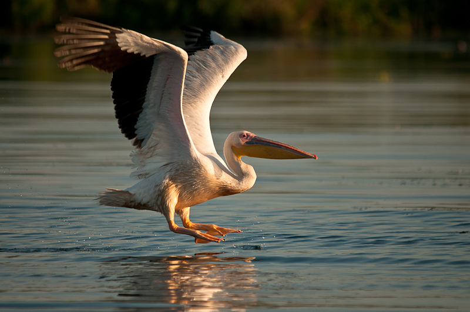

6 motive ca să alegi o vacanță în România!
România este una dintre putinele tari din Europa care cuprinde toate formele de relief: mare, munte, dealuri, campii. Este o tara minunata, cu peisaje mirifice, desprinse parca din povesti.
Romania are cateva locuri unice in Europa, cum ar fi: Delta Dunarii, Vulcanii Noroiosi, cascada Bigar, Transalpina.
Romania atrage multi turisti prin legenda unica a contelui Dracula si castelul Bran.
Sunt de vizitat numeroase obiective si cladiri istorice de unde puteti invata multe lucruri despre istoria tarii: castele, muzee, manastiri, pesteri, aflate pe intreg cuprinsul tarii.
Un cadru romantic numai pentru indragostiti – Tunelul Iubirii din judetul Caras-Severin, un loc ce trebuie vizitat pentru o poza perfecta de cuplu.
In Romania gasim un colt de rai pe intinderea Parcului National Retezat.